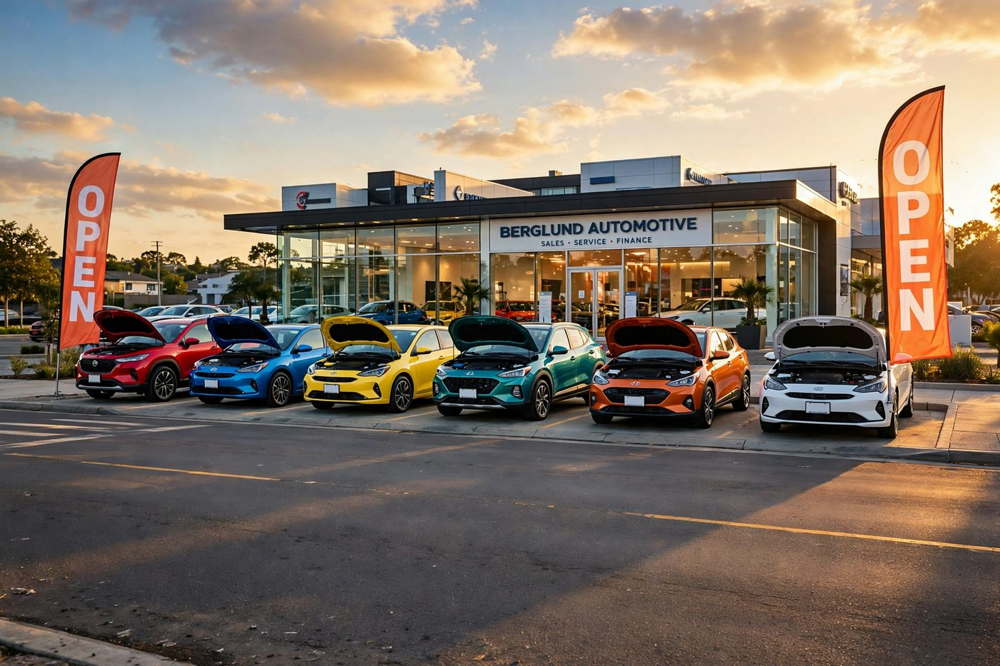
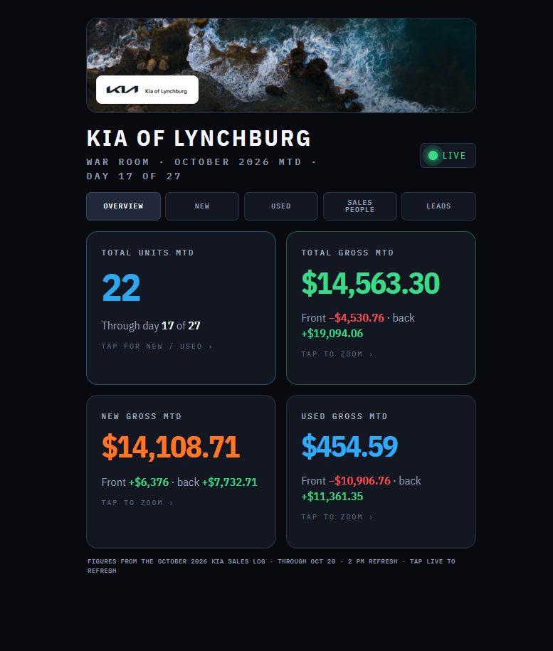
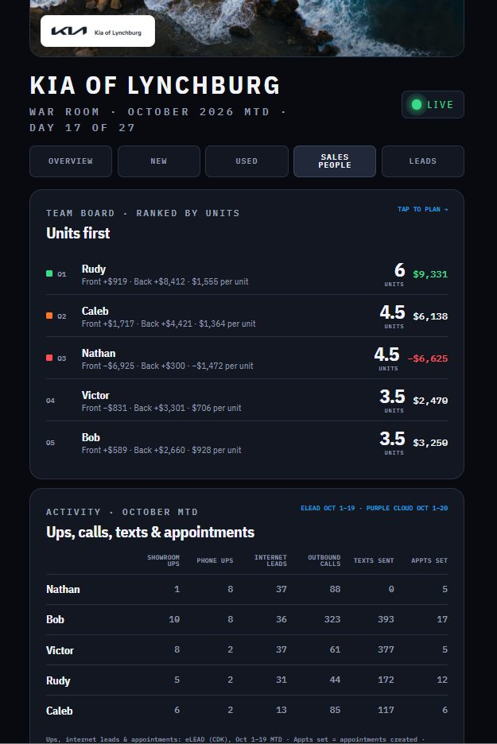
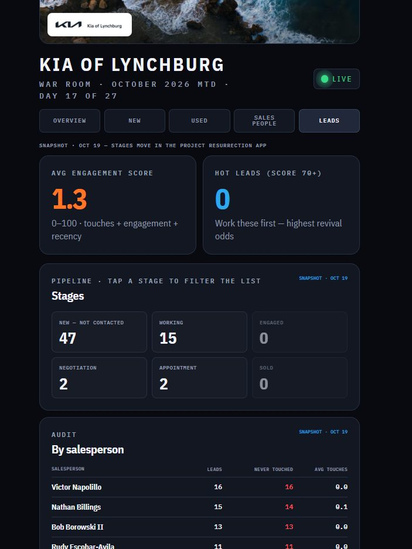
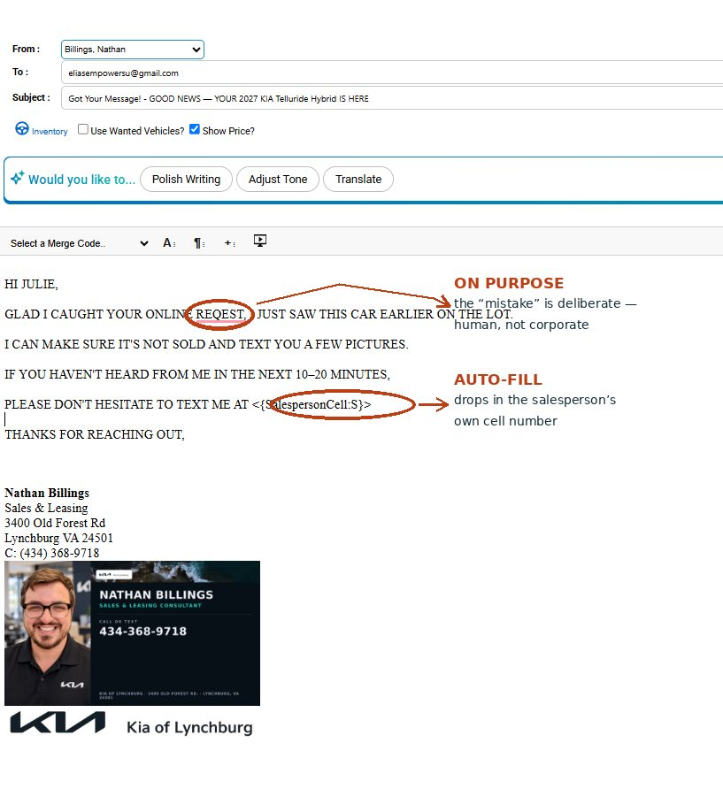
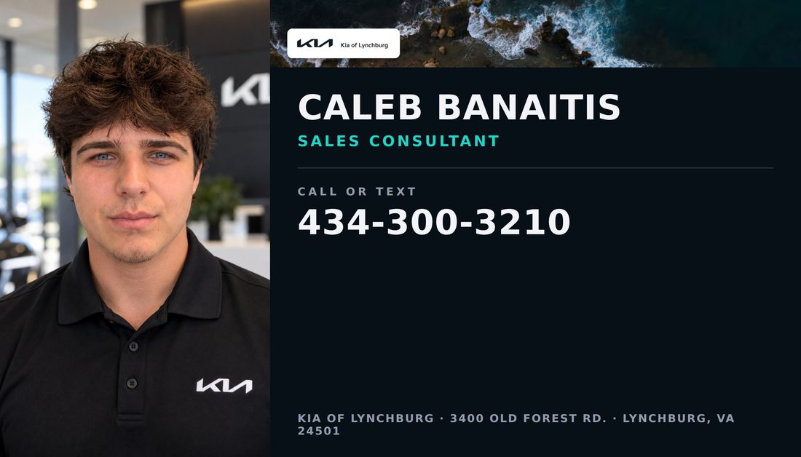
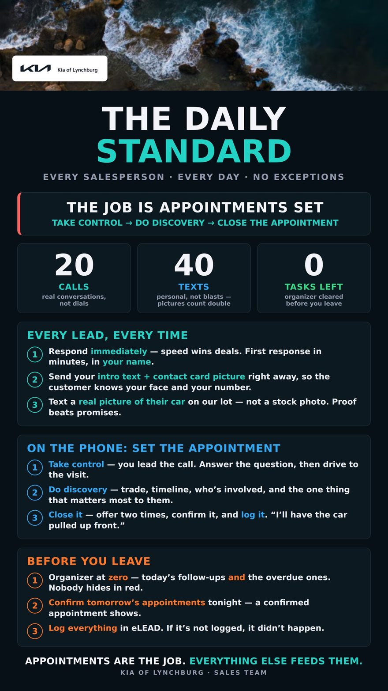
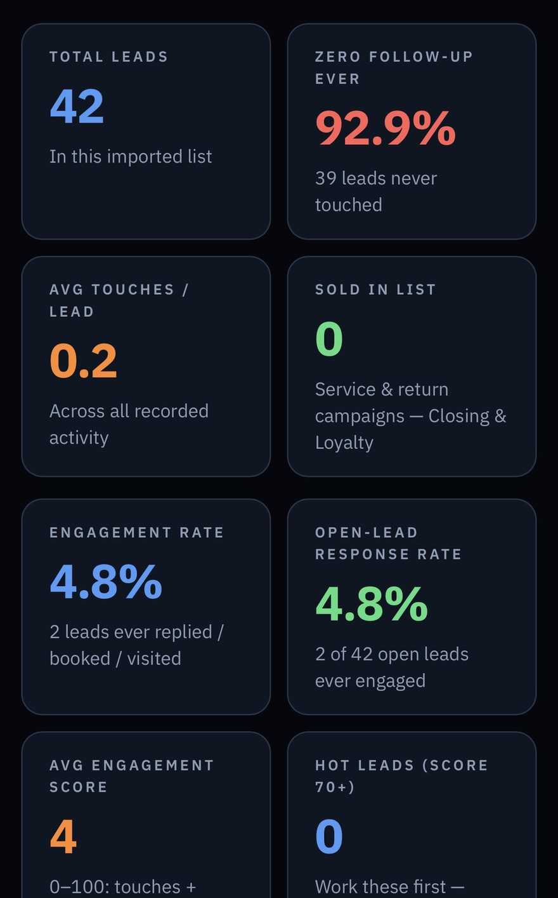

Everything we did was to draw attention. A store rarely has a product problem — it has an attention problem. Nobody's looking at the store, the cars, the leads, or the numbers. This is the system that fixes that.
"We opened all the hoods and picked colorful cars."
Every hood on the front line up. The most colorful cars pulled forward, facing the road. Big OPEN banners out. Upbeat music outside, chill music inside. A named owner, and a rotation rule: a dull front line gets fixed the same day — because a wall of closed, grey cars tells every driver passing by that nothing is happening here.
Attention starts at the curb. The lot is the biggest billboard the store owns, and it was already paid for.

An all-in dashboard — gross, inventory, salesperson productivity, and lead management — refreshed through the day, on every manager's phone.



One board, three audiences.
Before the board, every one of those questions took a meeting, a report, or a guess. Now it's a glance — and everybody is looking at the same numbers.
The first email back is instant — ALL CAPS, spaced out, one idea per line. "GLAD I CAUGHT YOUR ONLINE REQEST — I JUST SAW THIS CAR EARLIER ON THE LOT." It promises pictures by text, offers to hold the car, and invites the customer to text the salesperson's own number — which auto-fills — if they haven't heard back in 10–20 minutes.


Professional headshots were made for everyone — same showroom, same look. Cards were built for everyone from them, in one template. And every person's email signature was set up with their card, so the automated first response from any salesperson arrives with that person's face, name, and direct number on it.
The customer never meets a store. They meet Nathan. Or Caleb. A person they can picture, whose number they already have, who just saw the car. The automation is invisible — because the human is visible.
Appointments are the job. Everything else feeds them.
The Daily Standard went out to everyone on one flyer: 20 calls, 40 texts, zero tasks left — every day, no exceptions. Every lead answered immediately, in your name. An intro text with your contact-card picture. A real picture of their car on our lot — proof beats promises. On the phone: take control, do discovery, close the appointment. Before you leave: organizer at zero, tomorrow's appointments confirmed tonight, everything logged.
And the standard is measurable. Every phone on the floor was paired to Purple Cloud, so calls track in the CRM and activity shows on the board. You can't hold a standard you can't see — and pairing cuts both ways: the salesperson actually working finally has proof.

We run the report on every store's website — the same audit done for lynchburgmercedes.com. Two questions: can customers find the store, and does the site turn visits into leads?
The verdict at Mercedes: visibility is strong — deep indexing, top dealer and service rankings, transparent pricing. But attention leaks at the capture points:
Twelve fixes on the list — most cost nothing but a vendor ticket. Traffic you can't convert is attention wasted.
The website is the lot that never closes. It gets the same treatment: be seen, look alive, and give the customer a person to reach.

Every lead lives on a stage board, audited by activity — what has actually been done — never by a status label. Four working definitions tell a manager where things stand:
The ladder measures who's doing the moving — so a manager can see at a glance whether a lead is stalled on our side or theirs, and coach exactly that. Deals Working = Engaged or above.
One thing above all: a standard. Salespeople's sales and process needs to be standard — the same first response, the same seven-day follow-up, the same Daily Standard, the same stages, at every store. What was built at Kia becomes the standard everywhere. These are the small things that make the standard run:
The rights to build the follow-up cadence inside the CRM — at Kia it took a support case and was still open at the handoff.
Every phone on the tracking system from the start, so activity is visible and the standard is measurable.
Manager follow-ups and overdue-lead blasts run as automation, group-wide. At Kia the blast tool deleted the built email three times; 221 overdue follow-ups never got theirs.
Every store's website audited for visibility and sales-capture as a standing practice, so no store is invisible or leaking unnoticed.
Two emails, and one of them fires at any hour a lead can land — including Saturday after close, the one hole left at Kia.
Give me a store and this standard, and I'll give you a store that gets attention — and keeps it.